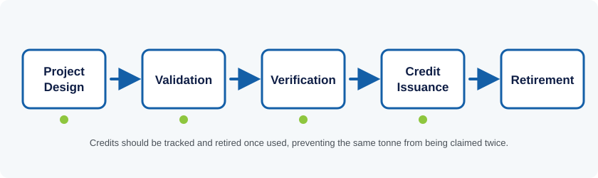

Tier 1
A carbon credit represents one tonne of carbon dioxide (or equivalent) avoided or removed, verified against a recognized methodology. Understanding how credits are created, traded, and scrutinized is increasingly relevant well beyond environmental specialists - including for long-term institutional investors.
1. What a Carbon Credit Actually Is
A carbon credit represents one metric tonne of carbon dioxide, or an equivalent amount of another greenhouse gas, that has either been kept out of the atmosphere or removed from it. Gases like methane trap far more heat than CO2 per tonne, so scientists convert them into a common unit called CO2 equivalent (CO2e) so that different climate actions can be compared on the same scale.
Cutting a tonne of emissions has the same effect on the atmosphere no matter where on Earth it happens, which is the basic logic behind trading credits: rather than forcing every emitter to cut emissions on-site, a system that lets emitters pay for verified reductions elsewhere can, in theory, achieve the same climate benefit at lower overall cost. A credit is only supposed to be issued after independent verification confirms the reduction or removal actually happened and meets a recognized methodology.
It helps to separate two related but distinct systems. A compliance scheme sets a legal ceiling on total emissions and lets participants trade allowances up to that ceiling - the EU's Emissions Trading System is the best-known example. A voluntary carbon market, by contrast, is not created by regulation; companies and institutions buy credits voluntarily, usually to support a net-zero pledge. The terms 'credit' and 'allowance' are often used loosely but describe different instruments belonging to different systems.
2. How a Carbon Project Gets From Idea to Issued Credit
A project developer selects a methodology approved by a carbon standard body - Verra's Verified Carbon Standard and the Gold Standard are the two most widely used - appropriate to the activity, whether that is reforestation, efficient cookstoves, landfill methane capture, or forest protection. Central to any methodology is a baseline: what would have happened to emissions in the absence of the project. The project's measured performance is compared against this baseline to determine how many credits it can generate.
This comparison only counts if it passes an 'additionality' test - the reduction would not have happened anyway under business-as-usual conditions. A solar farm already profitable and under construction before any carbon financing existed would struggle to demonstrate additionality. Once designed, a project is validated by an accredited third-party auditor before registering, then verified again after operating for a period, before credits are issued.

Each credit carries a unique serial number so it can be tracked and 'retired' once a buyer uses it to back a claim, preventing the same avoided tonne of emissions from being counted, and sold, twice.
3. Compliance Markets, Voluntary Markets, and Article 6
The Kyoto Protocol's Clean Development Mechanism allowed industrialized countries to fund emissions-reduction projects in developing countries and count the credits toward their own targets. It has since been succeeded by Article 6 of the Paris Agreement, which lets countries cooperate on reductions and trade results under stricter accounting rules designed to prevent both the buying and selling country from claiming the same reduction - a problem known as double counting.
Alongside these government-to-government arrangements, the voluntary carbon market lets companies and institutions purchase credits independent of any legal obligation, typically to offset emissions as part of a net-zero commitment. This market has grown rapidly as more companies adopt climate targets, though its total value remains far smaller than compliance markets.
For institutional investors and large asset owners, carbon markets intersect with investment decisions in two ways: portfolio companies' emissions and transition risk are increasingly assessed by investors, and carbon-related instruments are emerging as an investable asset class in some markets - making a basic understanding of how a credit is created and verified relevant well beyond environmental specialists.
4. Quality Concerns and the Push for Integrity
'Additionality' is difficult to prove with certainty; independent investigations into forestry projects in recent years have alleged that some claimed reductions would have happened anyway. 'Permanence' is a related concern for nature-based projects: a forest storing carbon today can burn down, be logged, or be cleared decades later, releasing the stored carbon unless the project has adequate buffers or insurance-like reserves.
'Leakage' describes a different failure mode, where protecting one forest simply displaces logging pressure to an unprotected area nearby, so the net global reduction is smaller than claimed. Double counting - the same reduction claimed by more than one party - undermines the basic premise that a credit represents an exclusive claim on one tonne of avoided emissions.
In response, the Integrity Council for the Voluntary Carbon Market (ICVCM) has published Core Carbon Principles intended to set a credible quality threshold that credit-issuing programs must meet, and buyer-side initiatives have published parallel guidance on credible offsetting claims. Checking whether a credit or program meets these emerging integrity benchmarks is now a standard part of responsible evaluation.
5. Relevance to Uganda and to NSSF
Uganda submitted an updated Nationally Determined Contribution under the Paris Agreement, setting out how the country intends to contribute to global emissions reduction while adapting to climate impacts such as shifting rainfall patterns affecting agriculture. Uganda hosts a number of carbon projects, particularly in forestry, clean cookstoves, and improved water access, several of which sell credits into the voluntary market to fund their operations.
Climate developments matter to any long-term investor on more than one front, and especially so for institutions managing long-term retirement savings. Physical climate risks - drought, flooding, changing agricultural yields - can affect the value of real assets and equities held over the decades-long horizon pension savings are invested for. Regulatory developments increasingly ask large investors to disclose and manage climate-related risk, and as carbon markets mature, they may become a more relevant reference point for how Uganda's private and public sector engage the broader climate finance conversation.
6. A Ugandan Case: Cookstove Carbon Credits
Improved cookstove projects are among the most common Gold Standard-verified carbon projects operating in Uganda today. The basic mechanism: a manufacturer distributes cookstoves that burn charcoal or wood far more efficiently than an open fire or basic stove, an independent verifier measures the resulting drop in fuel use and emissions against a credible baseline, and the avoided emissions are issued as tradeable credits that help fund the stoves' distribution. One long-running Uganda program has, over more than a decade, supported the manufacture and sale of over 930,000 improved stoves, with households reported to save more than $100 a year in fuel costs from stoves that use up to half the charcoal of a traditional one.
The case illustrates both sides of this lesson at once: it is a genuine example of climate finance functioning as intended - real household savings and lower emissions, independently verified - and a reminder of why the quality concerns in Section 4 matter. The credibility of the household savings and emissions figures rests entirely on the rigor of the baseline-setting and verification behind them, which is exactly what additionality and permanence checks exist to protect.
References & Further Learning
Independent sources for readers who want to go deeper than this lesson, cited so you can verify the material yourself.
-
Read
UNFCCC - Introduction to International Voluntary Carbon Markets
UN climate secretariat briefing explaining how voluntary carbon markets and crediting programs work.
-
Website
Verra - Verified Carbon Standard (VCS) Program
The world's most widely used carbon crediting program; explains how projects are registered and verified.
-
Watch
UNFCCC - How Carbon Credits Work
Short explainer video from the UN climate body on the mechanics of carbon crediting.
-
Tool
Gold Standard - Uganda Improved Cookstoves Project Page
The project registry listing for the Uganda cookstove case discussed above, including its verified impact data.
-
Case
Impact Carbon - Cookstoves in Uganda
Program overview from one of the organizations behind Uganda's cookstove carbon credit projects.
Knowledge Check: Carbon Credits & Climate Finance
Finish the reading above, then take the test to check your understanding.
Question 1 of